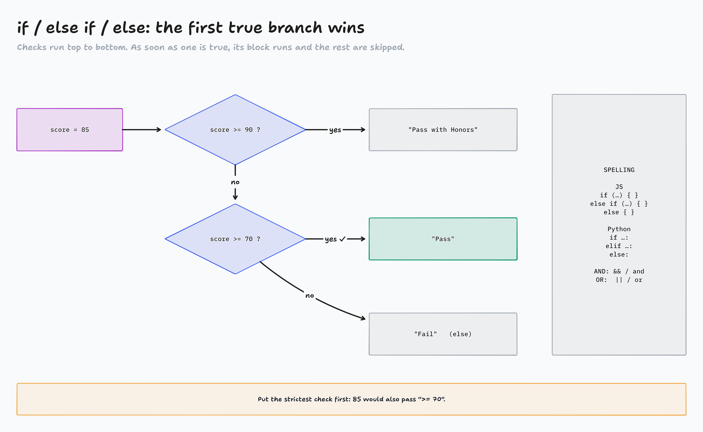
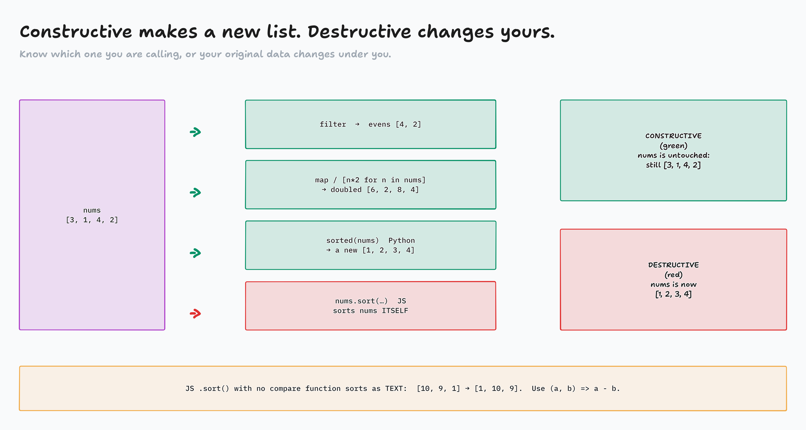

Fundamentals · JavaScript and Python · Part 2 of 2
Decisions, loops and functions
How a program reacts to data, repeats work, and wraps logic up to reuse. Same two languages, same code along.
You already think in if / else
- If the leg extension machine is open → quads
- Else if the leg curl machine is open → hamstrings
- Else → squats (there's always a squat rack open)
Today: comparisons → decisions → loops → functions → filter, sort and map.
Comparisons give true or false compare.js · compare.py
if / else if / else conditionals.js · conditionals.py

diagrams/JP2-01-if-flow.tldr
Loop a list: by value, by index, or both loops.js · loops.py
Loop an object or dict, then while more-loops.js · more-loops.py
Which loop?
| You want… | JavaScript | Python |
|---|
| each value | for (let c of colors) | for c in colors: |
| each index | for (let i = 0; i < colors.length; i++) | for i in range(len(colors)): |
| index and value | for (const [i, c] of colors.entries()) | for i, c in enumerate(colors): |
| object / dict keys | for (let k in user) | for k in user: |
| keys and values | for (let [k, v] of Object.entries(user)) | for k, v in user.items(): |
| until something changes | while (count < 3) | while count < 3: |
The trap: JS for…in on a list gives indexes, not values.
Activity: What prints?
- A few lines of code appear
- In chat on "go": the letter of what prints, A, B or C
- Then we run it in the codepad to check
Page: activity-what-prints/
Write it once, call it often functions.js · functions.py
![A function is a machine: arguments in, a return value out. The argument "Sam" is passed in a call to greet(name), where name is the parameter (the placeholder), and return "Good Afternoon " + name sends back the return value "Good Afternoon Sam". print or console.log only shows text in the terminal; the caller gets nothing back: undefined in JS, None in Python. return hands the value back to the caller: let message = greet("Sam") and now message holds it. JS: function greet(name) { … }. Python: def greet(name): …](../diagrams/JP2-02-function-machine.png)
diagrams/JP2-02-function-machine.tldr
Arrow, lambda, filter, sort, map functional.js · functional.py

a - b.">
diagrams/JP2-03-new-or-changed.tldr
Homework, Part II
Top to bottom: each one is a little harder.
- Factorial (JS):
node factorialSpec.js
- Roman Numerals (JS):
node romanNumeralsSpec.js
- 99 Bottles (Python):
python3 bottles.py
- Factorial (Python):
python3 factorial_spec.py
- Fibonacci (Python):
python3 fibonacci_spec.py
Done = every line of the spec prints True / true. Then 50 FreeCodeCamp steps.